図書館を歩いて本を探す
ドット絵の図書館を歩きまわって、「あ」〜「わ」のかな行ごとの本棚を調べられます。本棚には作品が背表紙で並び、作家ごとの仕切り板つき。眺めるだけでも楽しめます。
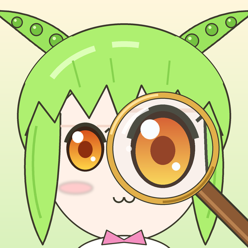
ドット絵の図書館を歩いて、
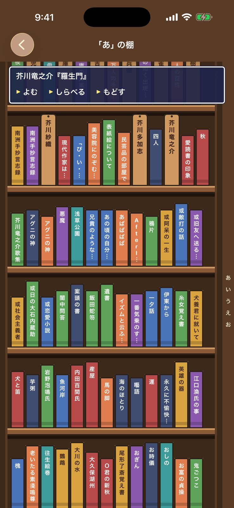
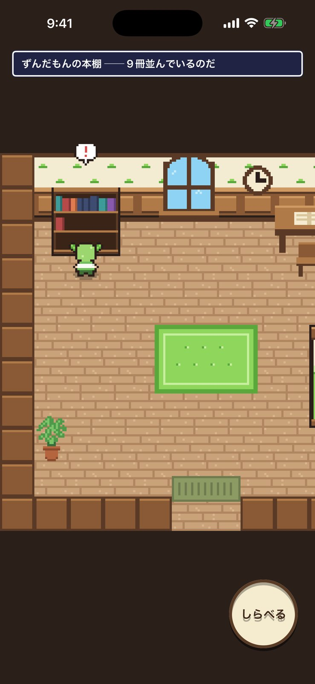
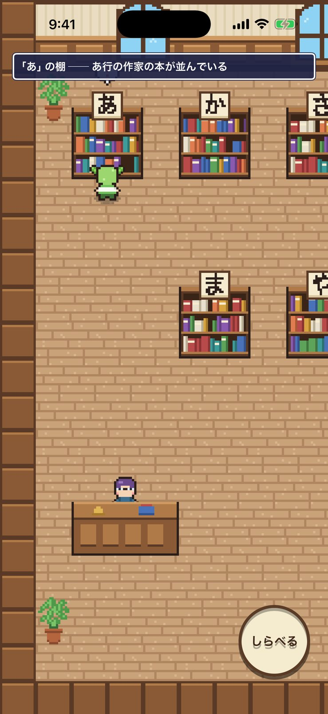
FEATURES
青空文庫で公開されている名作を、ずんだもんと一緒に探して、読んで、本棚に並べられます。
ドット絵の図書館を歩きまわって、「あ」〜「わ」のかな行ごとの本棚を調べられます。本棚には作品が背表紙で並び、作家ごとの仕切り板つき。眺めるだけでも楽しめます。
司書さんに話しかけると、題名や作家名から本を探してくれます。迷ったときは「おまかせで1冊」で、思いがけない名作に出会えるかも。
ページをめくって読む、本物の本のような読書画面。縦書き・横書き、文字の大きさ、背景の色を切り替えられます。一度借りた本は通信がなくても読めます。
借りた本は部屋の本棚に並びます。読みかけの本にはしおり、読み終えた本には金色の帯。机を調べると、読みかけの本の続きをすすめてくれます。
HOW TO USE
図書館で本を見つけてから読むまで、4つのステップです。
画面をドラッグして歩き、本棚の前で「しらべる」。
気になる背表紙をタップして、本を手に取ります。
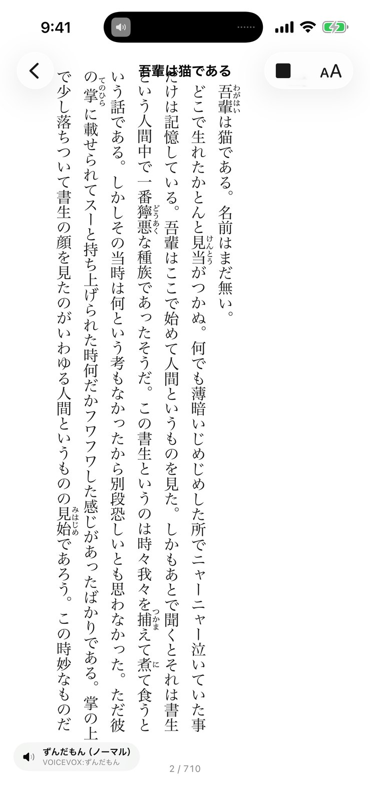
ページをめくって読んだり、ずんだもんに読み上げてもらったり。
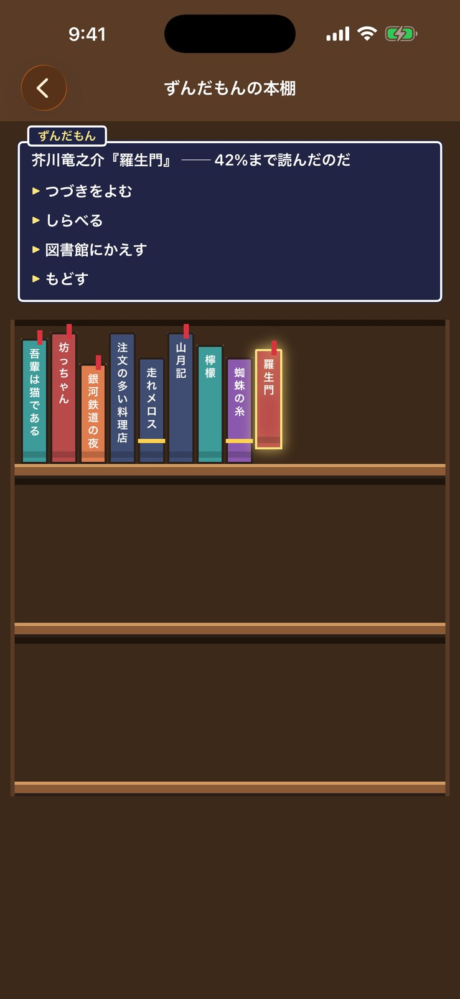
借りた本は部屋の本棚に。いつでも続きから読めます。
VOICE
読書画面のボタンひとつで、ずんだもんの声で読み上げます。ページの終わりで自動でめくり、ルビのある言葉はその読みで読み上げます。ほかのアプリを使っている間や画面を消している間も読み続け、ロック画面から一時停止・再開できます。
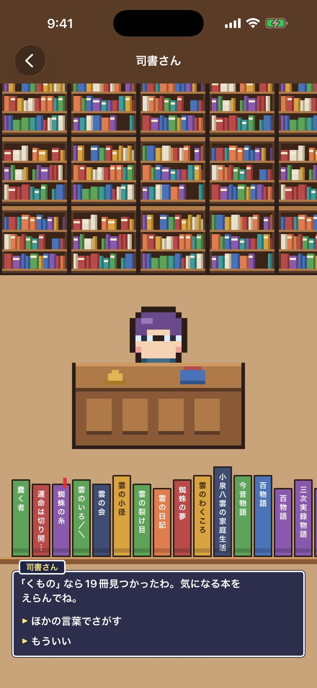
SCREENSHOTS
横にスクロールして、すべての画面を見られます。
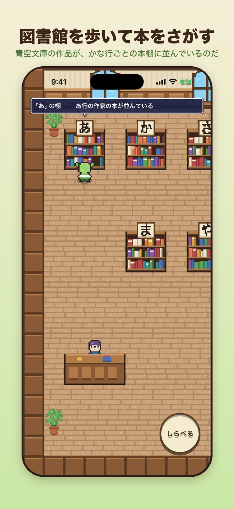
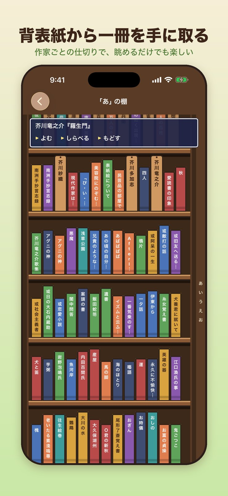
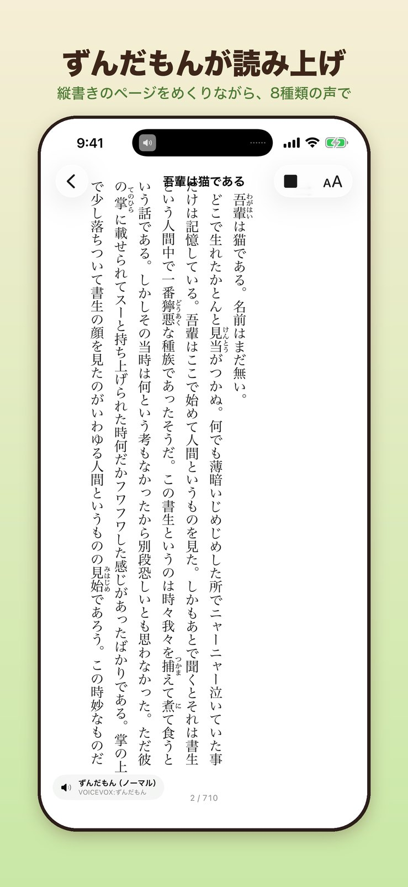
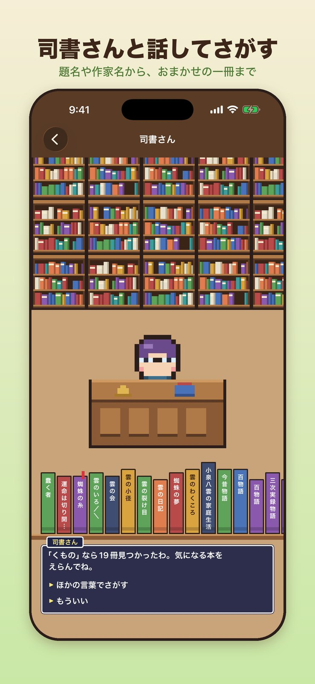
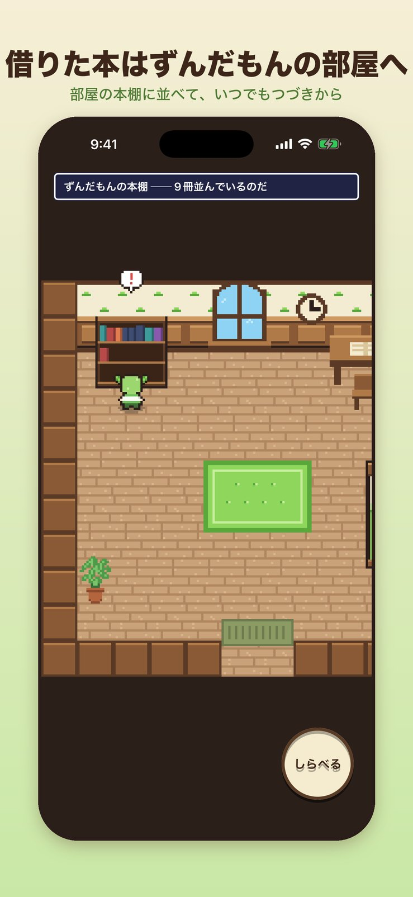
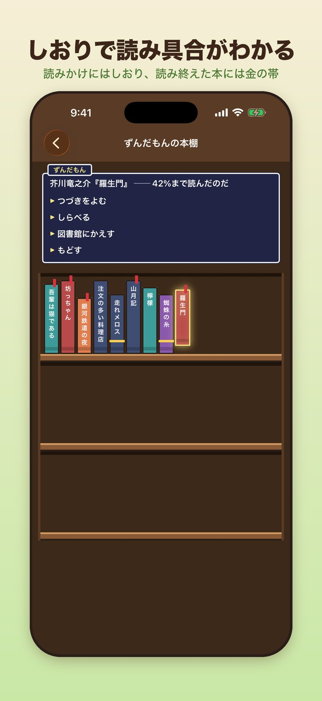
歩いて探して、読み上げてもらう読書アプリ。
ご意見・ご要望、不具合のご報告を受け付けています。
TwitterのDMで問い合わせる借りた本と読書の記録は端末内に保存します。作品一覧と本文は青空文庫から取得します。また、広告の表示に Google AdMob を利用しています。詳しくはプライバシーポリシーをご覧ください。
プライバシーポリシーを読む収録作品は、著作権の保護期間が満了し青空文庫で公開されている作品です。読み上げ音声は VOICEVOX を利用しています（音声合成：VOICEVOX:ずんだもん）。本アプリは個人が開発したもので、青空文庫・VOICEVOX・東北ずん子プロジェクトとは関係ありません。
青空文庫 ・ VOICEVOX ・ ずんだもん音源利用規約